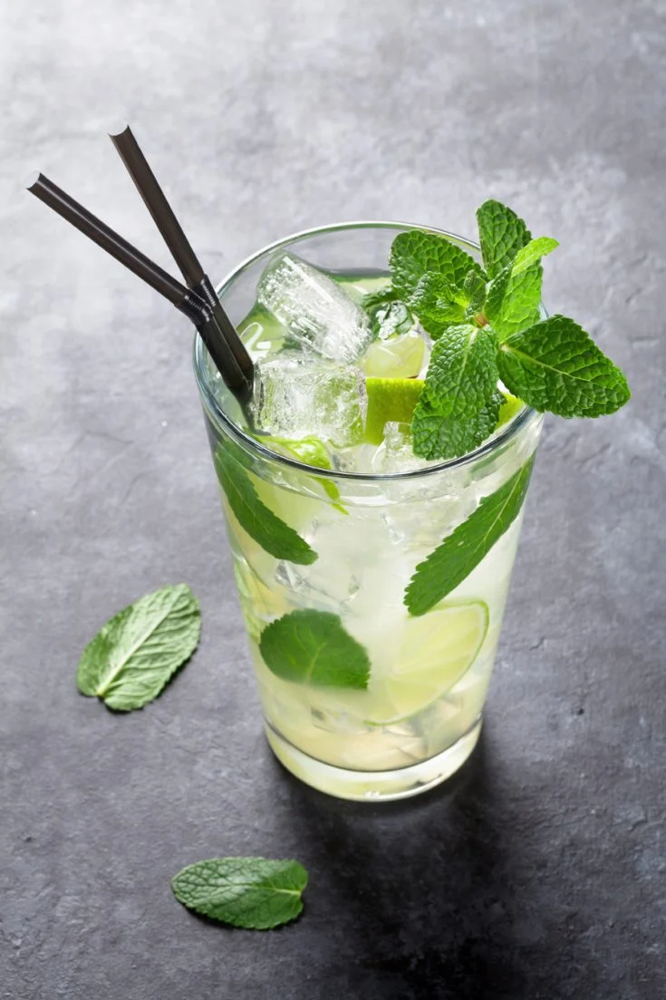

Ingredients
- Fresh mint – The star of this classic cocktail! You’ll muddle some mint leaves to infuse the drink with flavor and add more to your glass for garnish.
- White rum – Jack and I are fans of 10 Cane and Bacardi Silver Rum, but any white rum would work here. Feel free to use your favorite!
- Fresh lime juice – It adds bright, tart flavor. Always, always use freshly squeezed lime juice in this mojito recipe.
- Simple syrup – Classic mojito recipes call for sugar, but I like to use simple syrup in its place. It streamlines the recipe, as you don’t need to muddle the sugar with the lime and mint. Simple syrup keeps for several weeks in the fridge, so I like to keep it on hand for anytime I’m in the mood for a fun drink.
- Club soda or sparkling water – It balances the tart lime and alcohol and gives the cocktail a fun fizz.
- Ice – You can’t make a cool, refreshing mojito without it!